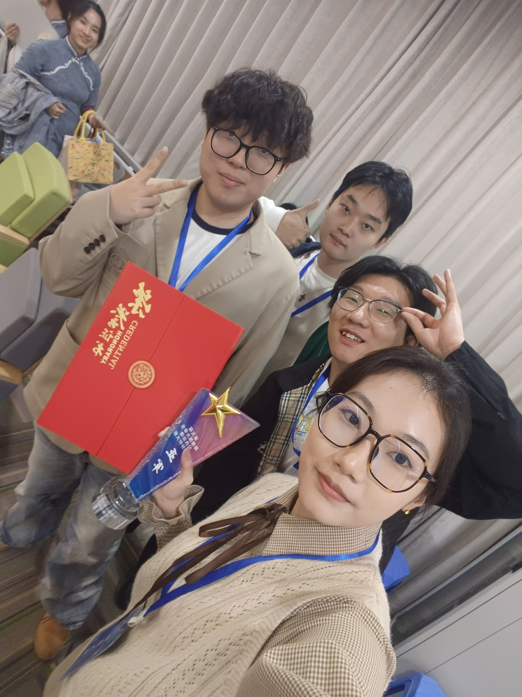

My Learning Log (CISC3003)
This log records my core learning progress in the CISC3003 Web Programming course (2025-2026 Semester).
| Week | Core Activity | Key Skills Learned | Outcome |
|---|---|---|---|
| W1-W4 | Basic Web Development | HTML semantic structure, CSS basic styling, responsive design basics | Completed simple static page development |
| W5-W8 | CSS & JavaScript Enhancement | CSS Flexbox/Grid, DOM manipulation, event listeners | Built responsive navigation bar with interactive effects |
| W9-W12 | Multi-page Website Integration | Cross-page style consistency, relative paths, basic JS interactions | Completed 5 main pages with unified style |
| W13-W16 | Project Polishing & Testing | Bug fixing, cross-browser compatibility, code optimization | Finalized personal portfolio website |
My Accomplishments
Key awards and practical achievements from my academic journey:

Guangdong-Hong Kong-Macao Greater Bay Area Data Analysis Competition - 2nd Prize
Completed data analysis project for regional industrial intelligence research (2025)
Key Academic & Practical Achievements
- Completed "Big Data Analysis" Research and Study Activity (University of Macau, 2024)
- Part-time Research Assistant at Tick Intelligent Recognition Algorithm Lab (2025-Present)
- Data Processor at Industrial Intelligence Laboratory (2024)
- Member of Natural Language Analysis Laboratory (University of Macau, 2025-Present)
My Statement of Purpose
Academic & Career Goals
As a Computer Science undergraduate at the University of Macau (anticipated graduation in 2027), my primary career goal is to secure a position as an IT Support Technician, leveraging my foundational knowledge in programming, data processing, and algorithm implementation.
Through the CISC3003 Web Programming course, I have built practical skills in HTML, CSS, JavaScript and responsive web development, which complement my core computer science knowledge (Data Structures, Algorithms, Object-Oriented Programming). My experience as a research assistant and data processor has further strengthened my ability to handle data analysis, technical documentation, and basic algorithm implementation – key competencies for IT support roles.
Winning the 2nd prize in the Guangdong-Hong Kong-Macao Greater Bay Area Data Analysis Competition has validated my data processing and problem-solving skills, which I aim to apply in IT support scenarios to resolve technical issues efficiently and provide data-driven solutions.
I am committed to continuous learning and practical application of technical skills, and aspire to contribute to the IT support team with my solid foundational knowledge and hands-on experience.